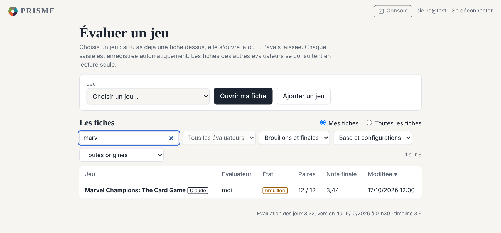
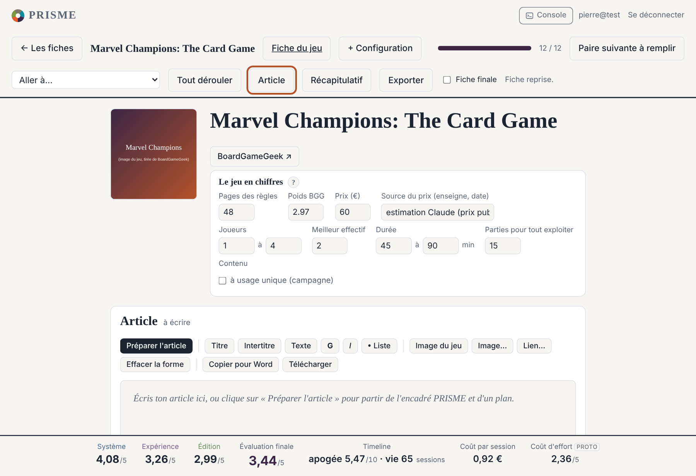
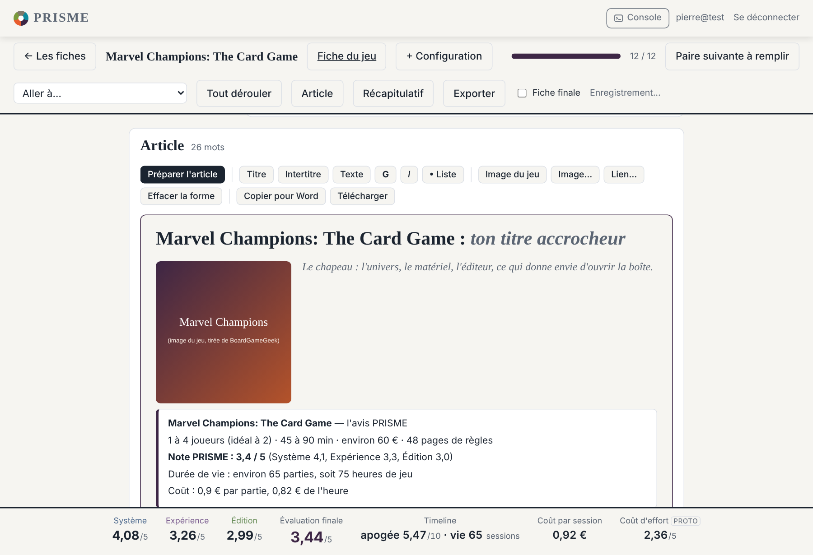
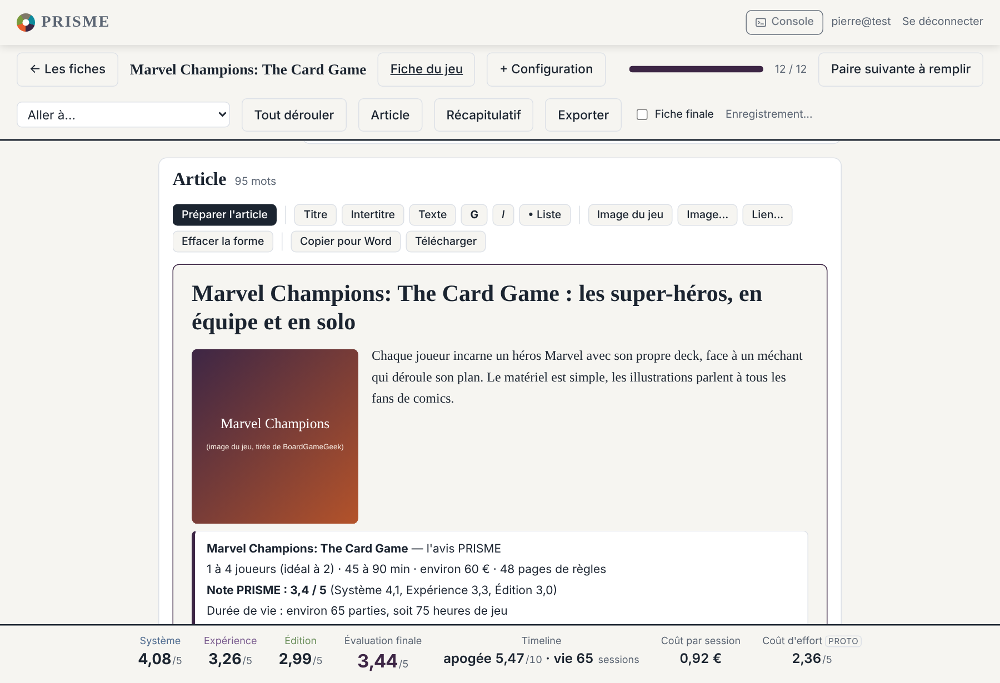
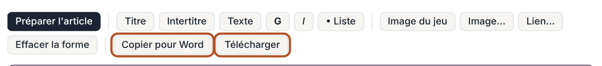
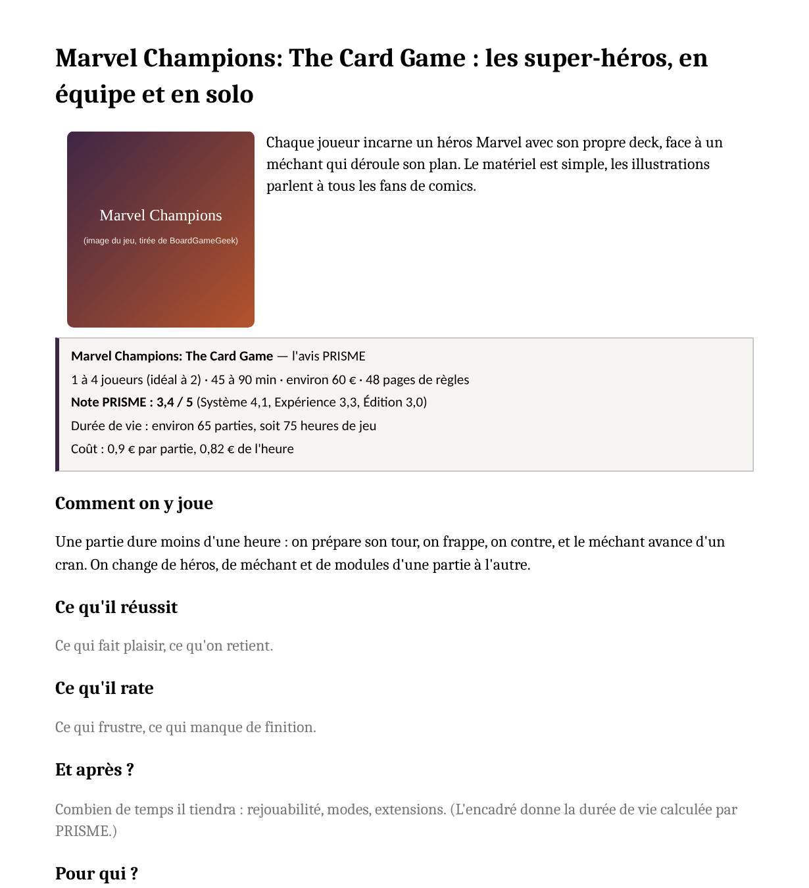

Écrire un article avec PRISME
Cinq étapes, de ta fiche à ton fichier Word. Tu écris comme d'habitude ; PRISME garde tout au même endroit et te prépare le terrain : les chiffres du jeu, sa note, sa durée de vie et son coût à l'heure.
Ouvre tes évaluations
Connecte-toi, puis, sur l'accueil, clique sur la tuile Mes évaluations et articles. Tu arrives sur la liste de tes fiches.
Pour retrouver un jeu, tape quelques lettres dans Chercher un jeu. Le menu Avec un article ne garde que les fiches où tu as déjà écrit. Pour un jeu dont tu n'as pas encore la fiche : choisis-le dans la liste Jeu, en haut de la page, puis Ouvrir ma fiche ; s'il n'est pas dans la liste, Ajouter un jeu.

Va à l'article
Clique sur la fiche du jeu. En haut, le bouton Article t'amène à l'éditeur. Les notes du jeu sont plus bas : tu n'as pas besoin d'y toucher pour écrire.

Clique sur « Préparer l'article »
PRISME pose dans l'éditeur l'image du jeu, un encadré avec ce qu'il sait (joueurs, durée, prix, note, durée de vie, coût par partie et à l'heure) et un plan : comment on y joue, ce qu'il réussit, ce qu'il rate, et après, pour qui, verdict.
Le plan est une proposition : change les intertitres, mets les tiens, supprime ce qui ne sert pas. Rien n'est effacé si tu as déjà écrit : le plan s'ajoute à la fin.

Écris
Clique sur un texte gris : il se sélectionne, et ce que tu tapes le remplace. Les boutons font le reste : Titre, Intertitre, Texte, G (gras), I (italique), • Liste.
Images : Image du jeu pose la boîte à gauche du texte ; Image… en ajoute une autre à partir de son adresse (sur le web, clic droit sur l'image, « Copier l'adresse de l'image »). Tu peux aussi coller un texte écrit ailleurs, dans Word par exemple : la mise en forme simple suit.
Tout s'enregistre tout seul, comme le reste de la fiche. Tu peux fermer la page et revenir quand tu veux.

Envoie-le vers Word
Copier pour Word copie l'article mis en forme : ouvre Word (ou un mail, ou Google Docs) et colle avec Ctrl + V.
Télécharger enregistre un fichier que Word ouvre directement. Les images viennent d'Internet : ouvre-le connecté.


Et les notes ?
- L'encadré se nourrit des notes de la fiche. Une fiche pré-remplie (beaucoup le sont déjà) donne tout de suite une note, une durée de vie et un coût.
- Tu peux corriger une note quand tu veux : clique sur le palier qui correspond, dans la paire concernée. L'encadré déjà posé ne bouge pas ; « Préparer l'article » en pose un à jour.
- Une question, une idée, un bouton qui manque : dis-le à Pierre.
© 2026 Pierre Pigeon, tous droits réservés · conditions